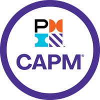

Alix Reyna
+52 (834) 301 1546 ·
alixreynaflo@gmail.com ·
UTC -05:00
I am a PM with a focus on operations & logistics. I got my start in the world of Esports, first as a content collaborator for ESLA, and later as a logistics guru for Riot Games in the LATAM region. I love my work, because I am motivated by delivering magical customer experiences.
Certifications
 · Certified Associate Project Manager (CAPM), PMI.org - 2020
· Full Stack Developer, Tecnológico de Monterrey - 2019
· Certified Professional Agile Fundamentals, ICAgile - 2017
 · Riot Games · LATAM | Mexico City, MEX
· Riot Games · LATAM | Mexico City, MEX · Esports Latinoamerica · Guadalajara | Remote
· Esports Latinoamerica · Guadalajara | Remote